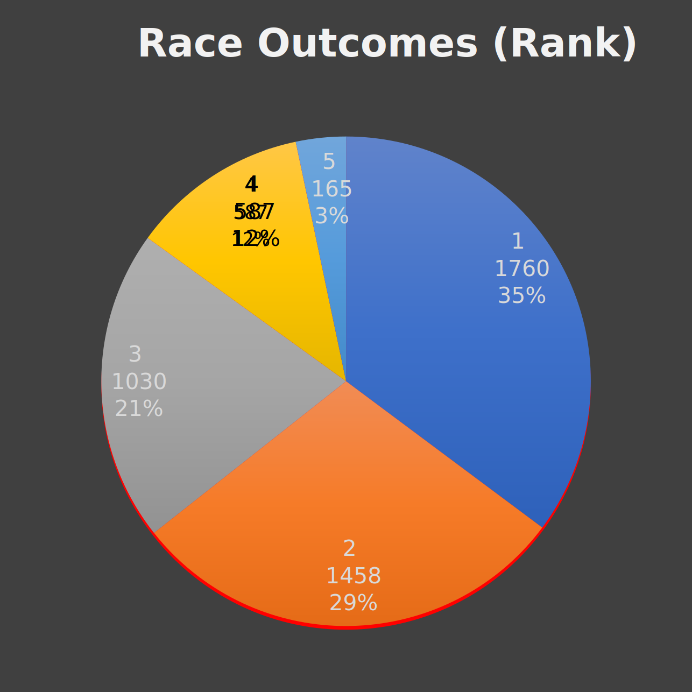
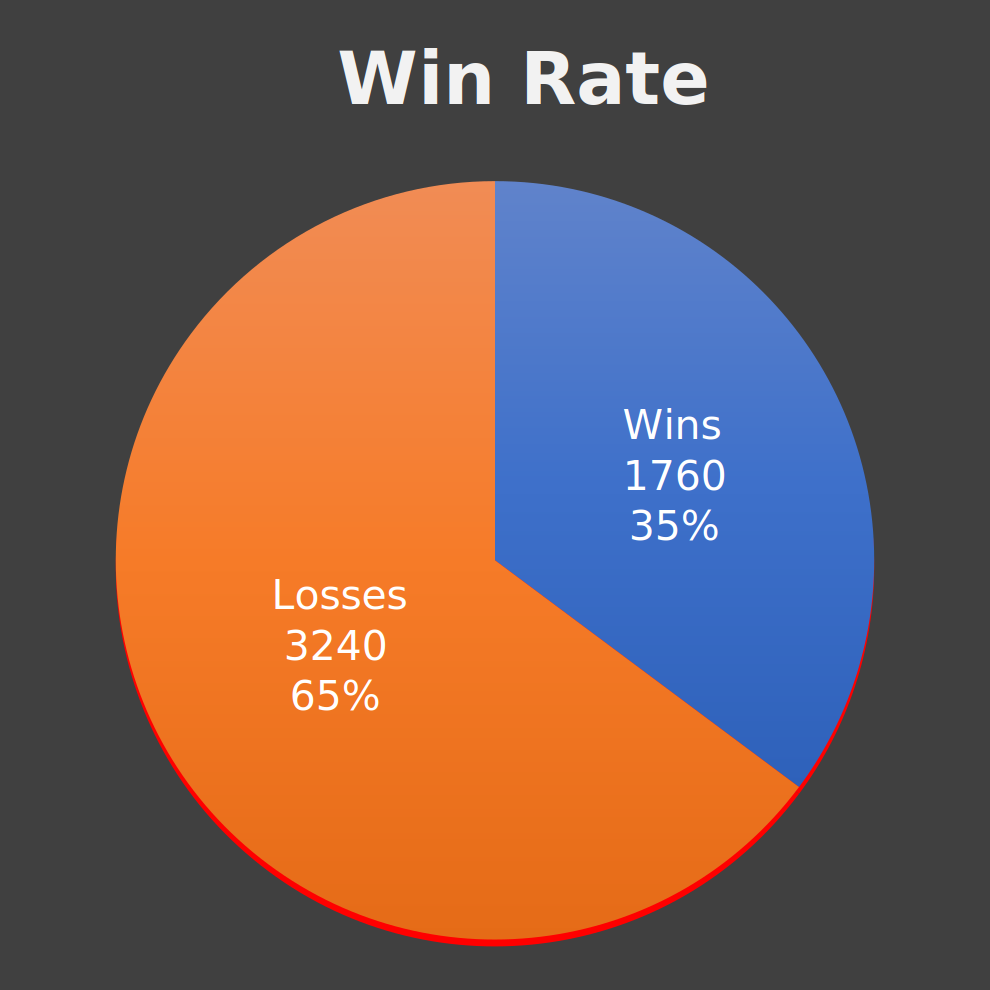
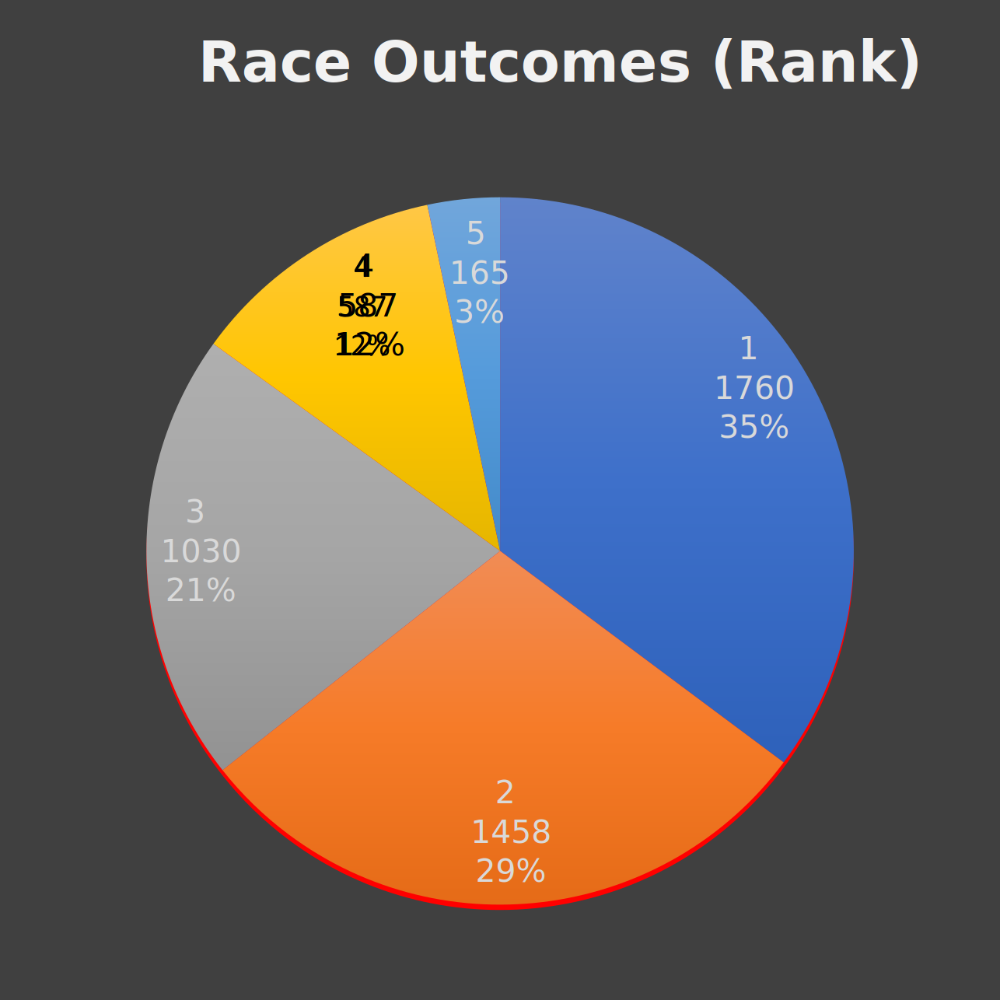
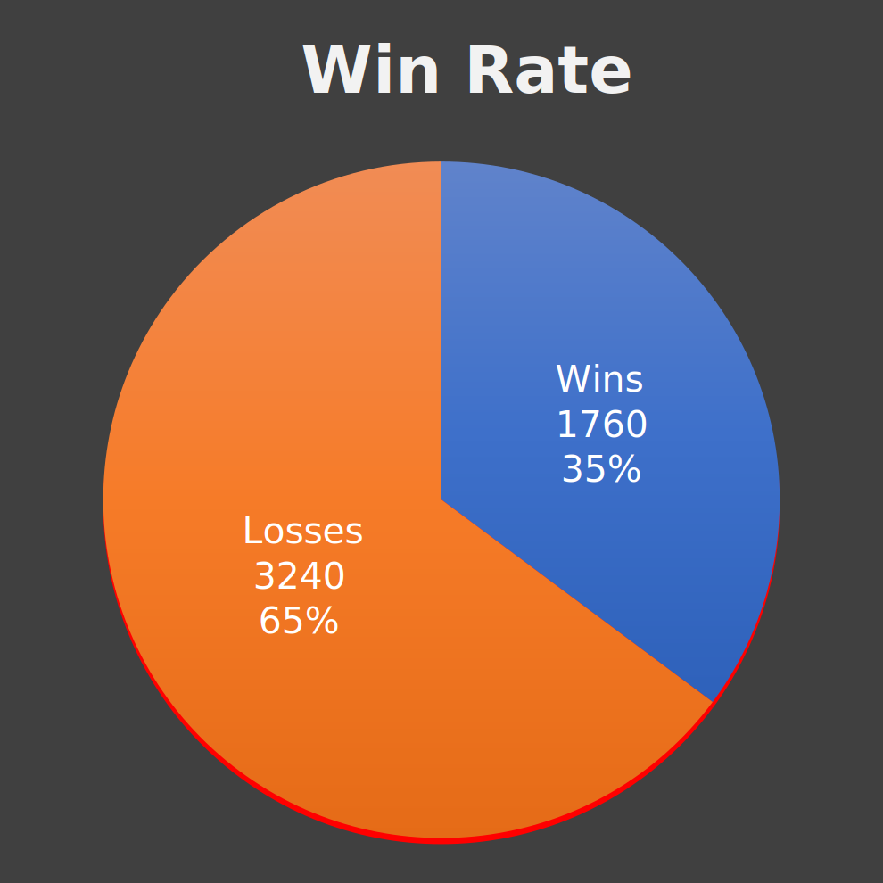

Last Modified: April 17, 2023
Last Modified: April 17, 2023
During the summer of 2018 I decided to teach myself "proper" touch typing on play.typeracer.com.
This project was multipurpose. It let me reflect on my progress which is an important step in further improvement. Moreover, it gave me an opportunity to dig my teeth into Excel, where most of this project was done.
Lastly, I would like to credit typeracerdata.com for inspiring or simplifying several parts of this undertaking.

Typeracer emphasizes your current wpm as an average of your 10 most recent races. In the scorecard snapshot at the top of this page, my last 10 races came out to 106 wpm. Unfortunately, this average is sensitive to a series of good or bad races. In my case, it has swung from 90 to 110 wpm in a short period. On the other hand, my full average of 87.3 wpm is weighed down by the hundreds or thousands of races it took to improve from my humble beginnings. A more reasonable judge of my current level lies between these extremes.
The table and chart below include different Simple Moving Averages (SMA). SMA(n) yields the averages of n contiguous points. So a plot of SMA(10) will illustrate a moving average of 10 races. The chart below does well to illustrate the problems with SMA(10) and the full average when compared to SMA(100) or the more gradual SMA(1000).
I was quite surprised to see the standard deviation of the first 1000 and last 1000 races were so similar. However, deviating by 9.5 around an average of 101.7 is a lot less striking than the deviation of 9.4 from 67.0 wpm. This concept is summarized as the coefficient of variation (CoV). A larger CoV indicates greater relative spread.
| First 1000 | Full 5000 | Last 1000 | |
|---|---|---|---|
| Avg WPM | 67.0 | 87.3 | 101.7 |
| STDev (σ) | 9.4 | 15.6 | 9.5 |
| Mean ± 2σ | [48, 86] | [56, 119] | [83, 121] |
| Coefficient of Variation | 0.1406 | 0.1788 | 0.0931 |
| Best SMA(10) | 80.1 | 110.5 | 110.5 |
| Worst SMA(10) | 45.3 | 45.3 | 89.9 |
| Best SMA(100) | 73.9 | 104.6 | 104.6 |
| Worst SMA(100) | 54.4 | 54.4 | 98.0 |

These charts detail the progression of my best races. I had 24 new bests in total (not including my first race). The charts comes in two flavors you can swap between: chronological and sorted.
I chose to define marathon as the number of races completed in a single calendar day.
This metric was inspired by typeracerdata.com. They define a marathon as the number of races completed in any 24-hour block. This allows your marathon to bridge adjacent calendar days. As such, their definition found my top marathon to be
121 races in 24 hours, starting 2021 November 29, 9:23pm.
Each measure has some strengths and weaknesses. Marathons by calendar day is simple and unambiguous, but it fails to capture races in the same session that go beyond midnight (see Race Count by Hour). Marathons by any 24-hour block resolve this problem but are subject to counting unrelated sessions. In my case, high activity the night of Nov 29th, and high activity the afternoon of the 30th compose my top marathon of 121 races.
Perhaps a better approach, given what we know about this data, would require defining a "marathon day" that lasts 24-hours and begins at 5:00am. This regularly separates race activity (as seen in the Race Count by Hour figure) while maintaining the essence of a marathon. The drawback is complexity.
| First Race Date | . . . . . | 07/21/2018 |
| Last Race Date | . . . . . | 09/06/2022 |
| Total Days | . . . . . | 1509 |
| Inactive | . . . . . | 1176 |
| Active | . . . . . | 333 |
| Total Races | . . . . . | 5000 |
| Avg Races/Active Day | . . . . . | 15.0 |
| Avg Races/Day | . . . . . | 3.3 |
| Days with <10 races | . . . . . | 135 |
| Rate | . . . . . | 0.41 |
| Days with 1 race | . . . . . | 25 |
| Rate | . . . . . | 0.08 |
| Avg races when (>=10) races | . . . . . | 22.4 |

It is now time to make it unclear. To write off lines that don't make sense. I love myself better than you. I know it's wrong so what should I do? And one more special message to go, and then I'm done, and I can go home. I love myself better than you. I know it's wrong so what should I do?
- On a Plain (song) by Nirvana
There's sometimes a buggy. How many drivers does a buggy have? So, let's just say I'm driving this buggy, and if you fix your attitude, you can ride along with me. Now you will see me one more time, if you do good. You will see me two more times, if you do bad.
- Mulholland Drive (movie) by David Lynch
So you run and you run to catch up with the sun but it's sinking, racing around to come up behind you again. The sun is the same in a relative way but you're older, shorter of breath and one day closer to death.
- Time (song) by Pink Floyd
What a lamentable thing it is that men should blame the gods and regard us as the source of their troubles, when it is their own transgressions which bring them suffering that was not their destiny.
- The Odyssey (book) by Homer
It seems to me you lived your life like a candle in the wind, never knowing who to cling to when the rain set in. And I would have liked to have known you but I was just a kid.
- Candle In The Wind (song) by Elton John
 


